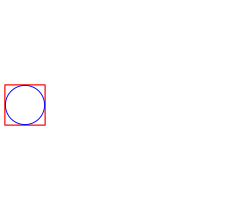
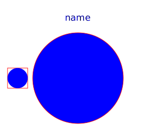
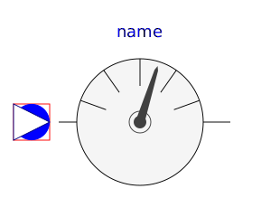
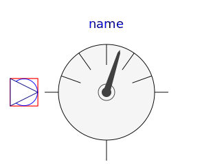

| Name | Description |
|---|---|
|
|
Simple friction model |
|  TwoPort | Partial model of two port |
|  Ambient | Partial model of ambient |
|  AbsoluteSensor | Partial model of absolute sensor |
|  RelativeSensor | Partial model of relative sensor |
| FlowSensor | Partial model of flow sensor |